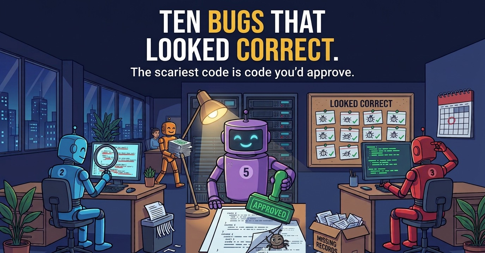

War stories · PHP · MySQL
A bug that looks wrong gets caught. The ones that cost me the most time read as right. They passed review, passed tests, and waited for the one input, the one server or the one calendar day that made them true. Every one of these is from a live PHP application. If you've written PHP for long, you've probably shipped at least one.

The scariest code is code you'd approve.
When a line looks wrong, you fix it. When it looks right, you defend it. You read it, it says exactly what it means, and you go looking somewhere else, sometimes for hours, while the bug sits in the one line you already cleared. Each of these has the line that looked fine, why it looked fine, and the fix.
A cleanup deleted three methods because a search found no callers. An old page called two of them, spelled with different capitals. PHP method names are case-insensitive, so the calls had always worked, and the search was case-sensitive, so it never saw them. The cleanup shipped, and the next person to open that page got a fatal error.
Why it looked rightZero search results is a very convincing number.
The fixSearch for callers case-insensitively, and check for dynamic calls too.
?? lets an empty string throughA date filter defaulted with $start = $input['start'] ?? $default. An empty form posts '', which isn't null, so the default never applied and MySQL got '' as a datetime. It sat harmless for a long time, because the old query wrapped the column in DATE(), which tolerated it. Rewriting the filter to use an index exposed it at once.
Why it looked right?? reads as "use the default if there's no value". It means "if it's null".
The fixFor user input, ?:. The reverse holds when loading stored data, where ?: turns a real 0 into the default.
A value from .env read as false through getenv(), so the feature looked switched off. The file had loaded fine. The library's immutable loader fills $_ENV and $_SERVER but never calls putenv(), so getenv() can't see any of it.
Why it looked rightgetenv() is the function literally named for the job.
The fixRead $_ENV, then $_SERVER.
A DECIMAL(6,4) column used 100 as a special marker value. Its maximum is 99.9999, so every 100 was quietly stored as 99.9999, and not one row actually held the marker. Reports printed three decimals, which rounded it straight back to 100.000, so anyone checking for the marker found it.
Why it looked rightThe report showed 100.
The fixSize the column for the full range, and print at the column's own scale.
The whole test suite went red one morning with no code change. Nobody had touched anything, which is its own special kind of dread. A test passed time() into code with a seven-day cleanup window, while its fixtures had fixed dates. It passed every day until the calendar moved past the fixture date plus seven.
Why it looked rightIt had been green for as long as anyone remembered.
The fixPin the clock in tests. When a test goes red with no code change, compare its fixture dates to today before anything else.
A shared include bound a variable by reference to $_GET, so older pages could write through it. A newer page started with the ordinary line $params = [];, which, through the reference, emptied $_GET for everything below it. The URL in the address bar was correct the whole time.
Why it looked rightIt reads as initializing a local. The obvious place to debug was the code reading the parameters, the one place the bug wasn't.
The fixRead query parameters before that line, and treat any reference to a superglobal as a loaded weapon.
A shared validator kept a value only if it was truthy. "0" is falsy in PHP, so a typed zero came back as an empty string. On a form where blank meant "not entered" and zero meant "none", someone could type a careful, deliberate zero and have it recorded as never entered.
Why it looked right"0.00" and "0.5" survive the check. Only the bare zero a person actually types is lost.
The fixFor numbers, is_numeric plus a range check, never truthiness.
A tab timed out after ten seconds, yet the same queries ran in under half a second from the command line. One stuck request was holding the PHP session file lock, so every later request from that browser queued behind it.
Why it looked rightIt looked exactly like a slow query, and time went into tuning queries that were fine.
The fixRetry in a fresh session first. If it's fast there, your queries are fine. Release the session early in long requests.
json_encode(round(6.4, 1)) printed 6.4 on development and 6.4000000000000003552… in production. The servers had different serialize_precision settings, so no test ever saw it.
Why it looked rightround() looks like it settles the number.
The fixSend integers (milliseconds, cents) or formatted strings, and diff your production php.ini against development.
In a NOT NULL datetime column, the zero date '0000-00-00 00:00:00' matches IS NULL, a MySQL compatibility quirk. A queue's "not sent yet" check depended on it. Making the column nullable, the obvious cleanup that anyone would approve, would have silently stopped the queue, and the SQLite test database doesn't reproduce the behavior.
Why it looked rightAsking a NOT NULL column whether it IS NULL looks like dead code.
The fixKnow your sentinels, comment the line that depends on one, and test that predicate against real MySQL.
Review checks that code says what you meant. It can't check that the language agrees.
Empty string, zero, null, 100, the zero date. Test the boundary values your users actually type, not the ones that are easy to write down.
Different php.ini, different database engine in tests, different clock. Half of these could only appear on the real thing.
How I check that a fix actually worked (proving fixes without an experiment), and how failures stopped hiding in the first place (silent failures).